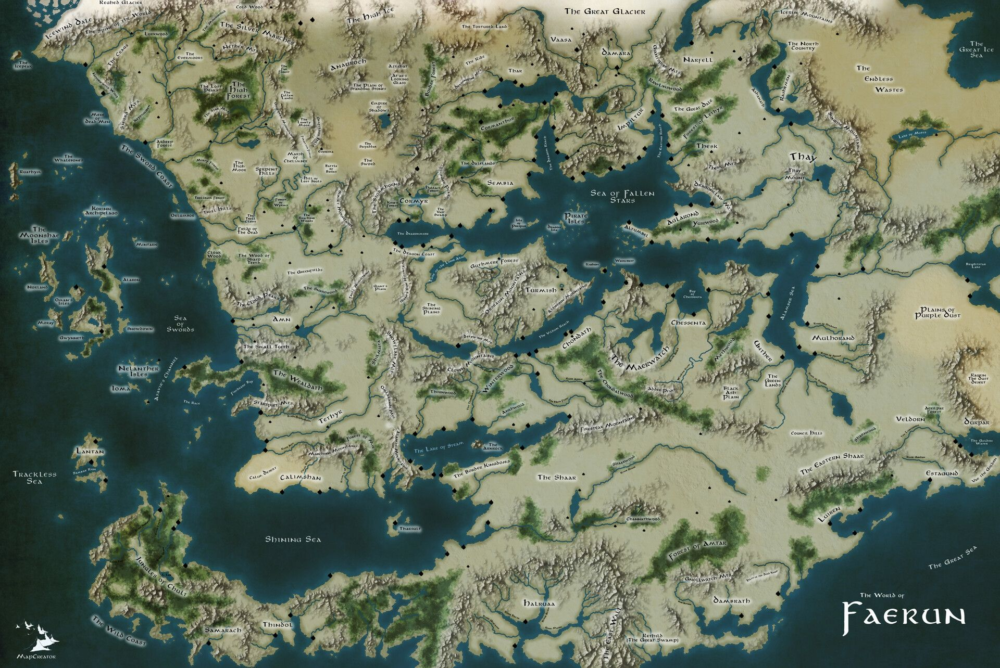
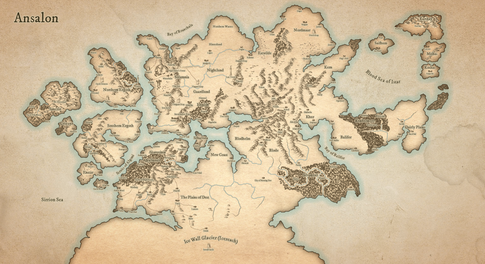
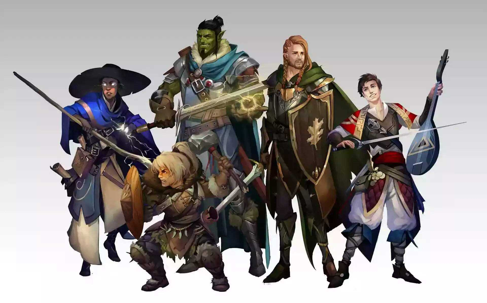

— настольная ролевая игра, повествующая о мирах мечей и колдовства. Двигателем D&D является воображение. Эта игра о воображаемом замке, возвышающемся под грозовыми ночными небесами, и о том, как искатели приключений будут преодолевать испытания, которые выпадут на их долю.
Миры Приключений
Многочисленные миры D&D населены волшебством и чудовищами, храбрыми воинами и волнующими приключениями.
Миры игры D&D существуют в бескрайнем
пространстве, называемом мультивселенной, и связаны странными и загадочными путями между собой и с другими планами существования, такими
как Стихийный План Огня и Бесконечные Глубины Бездны.
Огромное количество их было опубликовано в качестве официальных игровых миров для игры D&D. Легенды Забытых Королевств, Сага о Копье, Серый Ястреб— игровые миры,
переплетённые вместе в материи мультивселенной.
И среди этого богатства мультивселенной вы можете создать свой
собственный мир.
Легенды забытых королевств

Серый Ястреб

Твой мир
.
Создание Персонажа
Ваш первый шаг в роли искателя приключений в D&D заключается в том, чтобы представить себе и создать
собственного персонажа.
Вы можете быть отважным воином, проворным плутом, пылким жрецом или эксцентричным волшебником. Вам нравятся
фэнтези произведения с участием дварфов и эльфов? Создайте персонажа одной из этих рас! Хотите, чтобы ваш персонаж был самым стойким искателем приключений за столом? Попробуйте
классы варвар или паладин.
Подробнее о расах, классах и создании персонажа написано
в "Книге игрока" по D&D.

Правила
В основе правил D&D лежит система d20, названная в честь
20-ти гранной кости.
В правилах различные кости обозначаются
буквой «d» с последующим числом сторон: d4, d6,
d8, d10, d12 и d20. К примеру, к6 — это шестигранная кость.
Когда вам нужно бросить кости, правила указывают, как много и какого вида кости бросать, а
также какие модификаторы добавлять. Например,
«3d8 + 5» означает, что нужно бросить три восьмигранных кости, сложить их вместе и добавить 5 к сумме.
Пронзил ли клинок искателя приключений сердце
дракона или просто отскочил от твёрдой как сталь
чешуи? Поверит ли огр возмутительной лжи? Сможет ли персонаж переплыть бушующую реку? В случаях, когда исход действия неизвестен, D&D полагается на бросок 20-гранной кости (d20), чтобы определить успех или провал.
Подробнее о правилах написано в "Книге игрока" по D&D.